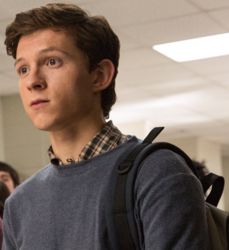

Frank Algie LongbottomAbout:1. Frank Algie Longbottom was born to Neville Frank Longbottom and Hannah Amelia Abott on April 29 2009. 2. His only sibling is Alice Augusta Longbottom. 3. He was sorted into Hufflepuff house when he first went to Hogwarts School of Witchcraft and Wizardry in 2020, at the age of 11. 4. His godparents are Hermione Jean Granger and Ronald Bilius Weasley. 5. He is a Pure blood wizard. 6. He wasn't appointed as Perfect, Head Boy or Quidditch Captain. Characteristics: 1. Lazy 2. Hungry 3. Clumbsy Possesions: 1. His father's DA Coin 2. A 13½", Red Wood, Dragon Heartstring Core Wand 3. Cleansweep Eleven (broomstick) Other Details: Eye Colour - Brown Hair Colour - Brown Height - 146cm (1st year) Height - 182cm (7th year) Species - Human/Wizard Gender - Male Patronus - Olm Boggart - Heights Favourite Colour - Ultramarine Nickname - Frankster Speciality - Herbology Later Life: Married To - Ruby Gardina Delacour Kids - Hannah Alice Longbottom (February 29, 2040) Professions - Troll Control Officer |
 |